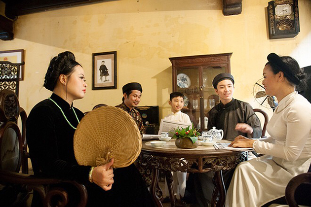

ハノイ人は多様で豊かな生活を送っています。 これまで、ハノイの人々はその才能と才能で有名であり、エンターテイメントと美的ニーズを満たす高品質の製品を生み出してきました。
また、多くの優雅な喜びがあり、精神的な生活に役立っています。 ハノイの人々は食べる、グルメな遊び、グルメな服装、繊細な味わい、優しい、美を知り、美を楽しむ方法を知っています。
エレガントで文明的なものは多くの異なる美しさの組み合わせであり、エレガントでエレガント、シンプルでシンプル、そして伝統と現代の響きがあります。 文明は完全に分離されているわけではありません。彼らはこれとそれとの密接な関係を持っています。
